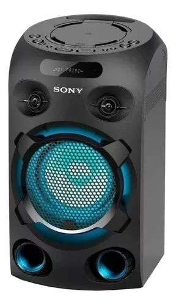
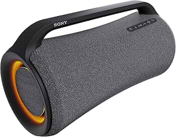

WH‑1000XM5 Wireless Noise Cancelling Headphones
Sony’s premium over-ear wireless headphones featuring industry-leading active noise cancellation, 30mm drivers, Bluetooth 5.2, LDAC high-resolution audio support, and up to 30 hours of battery life, delivering outstanding sound quality, comfort, call clarity, and immersive listening for music, travel, and everyday entertainment, with an estimated Botswana price of P5,500–P8,000.
Industry‑leading noise cancellation with crystal‑clear audio and all‑day comfort.
WF‑1000XM5 True Wireless Earbuds
flagship true wireless earbuds designed with powerful active noise cancellation, compact lightweight construction, Hi-Res Audio support, LDAC connectivity, and long battery life, providing excellent sound quality, strong bass, and comfortable everyday use for commuting, workouts, and entertainment, with an estimated Botswana price of P4,000–P6,500.
Premium sound quality in a compact design with adaptive noise cancellation.
ULT Tower 9
a large high-powered party speaker featuring Sony’s ULT bass technology, karaoke support, dynamic party lighting, and strong wireless connectivity, producing deep bass and loud immersive sound ideal for parties, events, and outdoor entertainment, with an estimated Botswana price of P14,000–P20,000.
A powerful party speaker delivering deep bass and immersive lighting effects.
SRS XV‑800
a powerful portable Bluetooth speaker designed with 360-degree party sound, deep bass performance, karaoke inputs, long battery life, and built-in lighting effects, making it ideal for social gatherings and outdoor entertainment while still being easy to transport, with an estimated Botswana price of P10,000–P15,000.
A versatile portable speaker with rich sound and long‑lasting battery life.

MHC‑V02
an affordable party speaker system focused on delivering loud audio and strong bass performance with Bluetooth streaming, party lighting, microphone support, and easy controls, making it suitable for home entertainment and casual parties, with an estimated Botswana price of P3,500–P5,500.
A compact high‑power audio system designed for parties and gatherings.
ULT FIELD 7
a rugged portable speaker featuring powerful ULT bass enhancement, long battery life, water resistance, and durable construction, delivering strong outdoor audio performance for travel, parties, and everyday listening while maintaining portability and reliability, with an estimated Botswana price of P6,500–P9,500.
The Sony SRS-XG500 is a high-perfor
Portable, rugged, and built for outdoor sound with enhanced bass performance.

SRS XG‑500
a high-performance portable speaker with deep bass, clear vocals, built-in lighting, a durable body, and up to 30 hours of battery life, making it ideal for indoor and outdoor entertainment while remaining easy to carry thanks to its built-in handle, with an estimated Botswana price of P6,000–P9,000.
A durable, water‑resistant speaker delivering powerful audio on the go.
PULSE EXPLORE Wireless Earbuds
premium gaming earbuds designed mainly for PlayStation users, featuring low-latency wireless audio, planar magnetic drivers, AI-enhanced microphone noise reduction, and immersive sound quality that enhances gaming and multimedia experiences, with an estimated Botswana price of P4,500–P6,500.
Next‑gen PlayStation audio with planar magnetic drivers for ultra‑clear sound.
PULSE Elite Wireless
a premium wireless gaming headset built for immersive PlayStation gaming with planar magnetic drivers, lossless wireless audio, AI-powered noise reduction microphones, and comfortable long-session wear, delivering highly detailed sound and strong communication quality, with an estimated Botswana price of P3,500–P5,500.
A premium wireless headset engineered for immersive gaming audio.


, Black.jpeg)